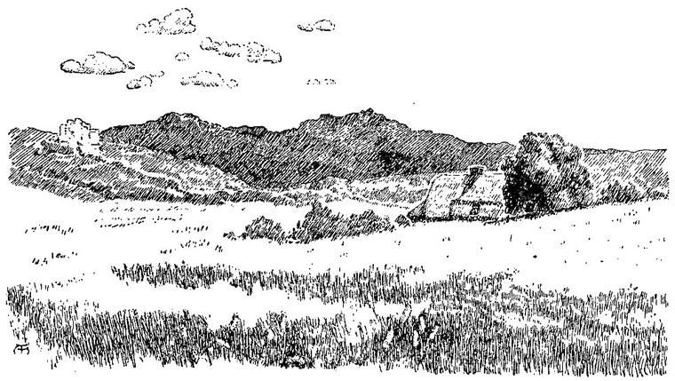

NOVALIS.
I knocke with my staf; erlich and late,
And say to hire, Leve mother, let me in.”
CHAUCER, The Pardoneres Tale.
Sinking from such a state of ideal bliss, into the world of shadows which again closed around and infolded me, my first dread was, not unnaturally, that my own shadow had found me again, and that my torture had commenced anew. It was a sad revulsion of feeling. This, indeed, seemed to correspond to what we think death is, before we die. Yet I felt within me a power of calm endurance to which I had hitherto been a stranger. For, in truth, that I should be able if only to think such things as I had been thinking, was an unspeakable delight. An hour of such peace made the turmoil of a lifetime worth striving through.
I found myself lying in the open air, in the early morning, before sunrise. Over me rose the summer heaven, expectant of the sun. The clouds already saw him, coming from afar; and soon every dewdrop would rejoice in his individual presence within it.
I lay motionless for a few minutes; and then slowly rose and looked about me. I was on the summit of a little hill; a valley lay beneath, and a range of mountains closed up the view upon that side. But, to my horror, across the valley, and up the height of the opposing mountains, stretched, from my very feet, a hugely expanding shade. There it lay, long and large, dark and mighty. I turned away with a sick despair; when lo! I beheld the sun just lifting his head above the eastern hill, and the shadow that fell from me, lay only where his beams fell not. I danced for joy. It was only the natural shadow, that goes with every man who walks in the sun. As he arose, higher and higher, the shadow-head sank down the side of the opposite hill, and crept in across the valley towards my feet.

Now that I was so joyously delivered from this fear, I saw and recognised the country around me. In the valley below, lay my own castle, and the haunts of my childhood were all about me hastened home. My sisters received me with unspeakable joy; but I suppose they observed some change in me, for a kind of respect, with a slight touch of awe in it, mingled with their joy, and made me ashamed. They had been in great distress about me. On the morning of my disappearance, they had found the floor of my room flooded; and, all that day, a wondrous and nearly impervious mist had hung about the castle and grounds. I had been gone, they told me, twenty-one days. To me it seemed twenty-one years. Nor could I yet feel quite secure in my new experiences. When, at night, I lay down once more in my own bed, I did not feel at all sure that when I awoke, I should not find myself in some mysterious region of Fairy Land. My dreams were incessant and perturbed; but when I did awake, I saw clearly that I was in my own home.
My mind soon grew calm; and I began the duties of my new position, somewhat instructed, I hoped, by the adventures that had befallen me in Fairy Land. Could I translate the experience of my travels there, into common life? This was the question. Or must I live it all over again, and learn it all over again, in the other forms that belong to the world of men, whose experience yet runs parallel to that of Fairy Land? These questions I cannot answer yet. But I fear.
Even yet, I find myself looking round sometimes with anxiety, to see whether my shadow falls right away from the sun or no. I have never yet discovered any inclination to either side. And if I am not unfrequently sad, I yet cast no more of a shade on the earth, than most men who have lived in it as long as I. I have a strange feeling sometimes, that I am a ghost, sent into the world to minister to my fellow men, or, rather, to repair the wrongs I have already done.
May the world be brighter for me, at least in those portions of it, where my darkness falls not.
Thus I, who set out to find my Ideal, came back rejoicing that I had lost my Shadow.
When the thought of the blessedness I experienced, after my death in Fairy Land, is too high for me to lay hold upon it and hope in it, I often think of the wise woman in the cottage, and of her solemn assurance that she knew something too good to be told. When I am oppressed by any sorrow or real perplexity, I often feel as if I had only left her cottage for a time, and would soon return out of the vision, into it again. Sometimes, on such occasions, I find myself, unconsciously almost, looking about for the mystic mark of red, with the vague hope of entering her door, and being comforted by her wise tenderness. I then console myself by saying: “I have come through the door of Dismay; and the way back from the world into which that has led me, is through my tomb. Upon that the red sign lies, and I shall find it one day, and be glad.”
I will end my story with the relation of an incident which befell me a few days ago. I had been with my reapers, and, when they ceased their work at noon, I had lain down under the shadow of a great, ancient beech-tree, that stood on the edge of the field. As I lay, with my eyes closed, I began to listen to the sound of the leaves overhead. At first, they made sweet inarticulate music alone; but, by-and-by, the sound seemed to begin to take shape, and to be gradually moulding itself into words; till, at last, I seemed able to distinguish these, half-dissolved in a little ocean of circumfluent tones: “A great good is coming—is coming—is coming to thee, Anodos;” and so over and over again. I fancied that the sound reminded me of the voice of the ancient woman, in the cottage that was four-square. I opened my eyes, and, for a moment, almost believed that I saw her face, with its many wrinkles and its young eyes, looking at me from between two hoary branches of the beech overhead. But when I looked more keenly, I saw only twigs and leaves, and the infinite sky, in tiny spots, gazing through between. Yet I know that good is coming to me—that good is always coming; though few have at all times the simplicity and the courage to believe it. What we call evil, is the only and best shape, which, for the person and his condition at the time, could be assumed by the best good. And so, Farewell.